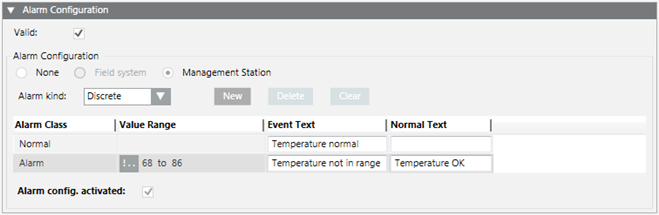
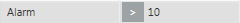
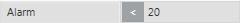
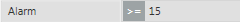
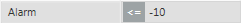
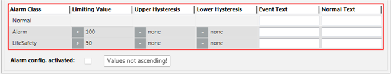
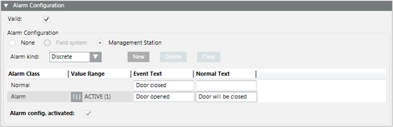
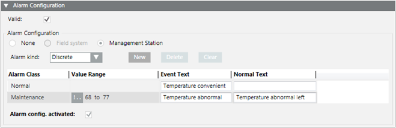
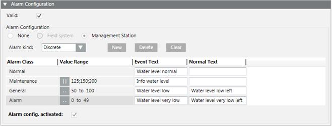

Create a Discrete Alarm
Create a Discrete Alarm
You want to set up a management station alarm that monitors a value or range. For example, 68 ‒ 86 is the normal value range; values that are greater or less than that range will trigger an alarm.
- You have the appropriate user rights to create an alarm.
- Select Project > Field Networks > [network] > Hardware > [device] > [Data point].
NOTE: The folder path may vary by subsystem or selected view. - Click the Object Configurator tab.
- In the Properties expander, select the appropriate property (for example, Present_Value).
- In the Alarm Configuration expander, select the Valid check box to display activation in grey.

- Select the Management Station option.
- (Optional) From the Alarm flags drop-down-list, select None, No alarm on driver invalid, No alarm on source time invalid (For background information, see the alarm configuration reference section).
- In the Alarm kind drop-down list select Discrete.
- Click New to define a new alarm class.
- Define the corresponding conditions for each alarm class:
a. Select the Alarm Classtype.
b. In the Value Range column, select the operand.
c. In the Value Range column, select the values.
For example, the range 100 through 200 and 200 through 300. Entering 100 through 199 and 200 through 299 creates a gap in monitoring from 199.001 to 199.999.
d. Enter the necessary information in the Event Text field and Normal Text field. Depending on your assigned event profile, the alarm lamps maybe different as in the picture
e. Select the Alarm config. activated check box. - Click Save
 .
.

The limit values are only monitored when the following conditions are met:
- In the Alarm Configuration expander, the Alarm config. activated check box is selected.
- In the Main expander, the Out of scan check box is deselected.
- The entries are saved.
Supported Operands | ||
Operand | Meaning | Example |
> | Greater than |  |
< | Less than |  |
>= | Greater than or equal to |  |
<= | Less than or equal to |  |
Fault indication
- The value sequence is not ascending. A valid value must be less than 50.

Example: Door and Window Monitoring
You can easily monitor a door by selecting the door contact input (Present_Value) in System Browser. Define the open state of the doors. For example, a !|| ACTIVE. A message is sent if the doors are opened.

The operands || or !|| depends on the contact function (normally open, normally closed).
Example: Simple Temperature Monitoring
You can easily create a simple temperature monitor by selecting the temperature sensor (Present _Value) in System Browser. Define the desired comfort temperature range. For example, !.. 68 to 77. The corresponding message is sent out if the value is breached or exceeded.

Example: Level Monitoring
You can easily create a level monitor by selecting the level sensor (Present_Value) in System Browser. Define a corresponding message for each level. The corresponding message is sent out when the set values are reached. In this case, the value for 125, 150 or 200 must be precisely changed to send out a message.

For Uint64 data types, if you configure a discrete alert with a range with maximum higher upper limit (that is, specifying the Max Uint 64: 18446744073709551616), you will only see an event if the property value is 2^63 - 1 (9223372036854775807) or lower. Any higher value of the property will not trigger the alert.